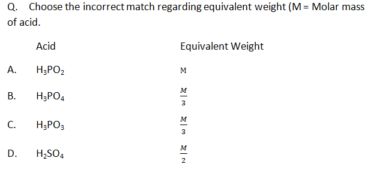

Let's Start
Q.Zerevitinov’s determination of active hydrogen in a compound is based upon its reaction with- Na
- CH3Mgl
- Zn
- Al
Explanation
Q.In the reaction of phenol with CHCl₃, and aqueous NaOH at 70°C(343K),the electrophile attacking the ring is
- CHCl₃
- CHCl₂
- :CCl₂
- COCl₂
Explanation
Q.Which of the following reaction is used to increase the length of the carbon chain?
- Wolff Kishnn’s reaction
- Clemmensen reduction
- Dearboxylation reaction
- Wurtz reaction
Explanation
Q.Which of the following acts as Electrophile in the sulphonation of benzene?
- SO2
- SO3H+
- SO3
- SO3H-
Explanation
Q.The dihedral angle in the staggered conformation of C2H6 is
- 1200
- 600
- 00
- 900
Explanation
Q. Arrange the following in decreasing order of their boiling points.
(I) n-Butane
(II) 2-Methylbutane
(III) n-Pentane
(IV) 2,2-Dimethylpropane
- I > II > III > IV
- II > III > IV > I
- IV> III> II> I
- III >II> IV > I
Explanation
Q.What is the molar solubility of PbI2
Ksp of PbI2 =7.1 x 10-9
- 12 x 10-3 M
- 1.4 x 10-3 M
- 1.2 x 10-2 M
- 1.2 x 10-3 M
Explanation
Q. Considering entropy(S) thermodynamic parameters the criteria for the spontaneity of any process is:
- △S system + △S surroundings > 0
- △S system – △S surroundings < 0
- △S system > 0
- △S surroundings > 0
Explanation
Q. The addition of carbonyl compound to HCN is an example of
- Nucleophilic substitution
- Electrophilic addition
- Nucleophilic addition
- Electrophilic substitution
Explanation
Q. Nucleophilicity order is correctly represented by
- CH3- < NH2- < HO- < F-
- CH3- > NH2- > HO- > F-
- NH2- > F- > HO- >CH3-
- CH3- ≃ NH2- > HO- ≃ F-
Explanation
Q. The correct pair regarding property given in bracket is
- F₂ > Cl₂ (Oxidising character)
- F > Cl (Electron affinity)
- F < Cl (Electronegativity)
- O > N (lonisation energy)
Explanation
Q. Industrially Hydrogen peroxide is prepared by which method?
- Electrolytic oxidation of acidified sulphate solutions
- Exhaustive electrolysis of water
- Acidifying barium peroxide
- Auto oxidation of 2-alkyl anthraquinols
Explanation
Q. In the reaction 3Br2 + 6CO32- + 3H2O → 5Br- + BrO3- + 6HCO3-
- bromine is oxidised and carbonate is reduced
- bromine is reduced and water is oxidised
- bromine is both reduced and oxidised
- bromine is neither reduced nor oxidised
Q.The strong conjugate base is
- NO3-
- Cl-
- SO42-
- CH3COO-


Q.In the ground state of a cobalt atom there are _____ unpaired electrons and the atom is _____.
- 3, paramagnetic
- 5, paramagnetic
- 2, diamagnetic
- 0, diamagnetic
